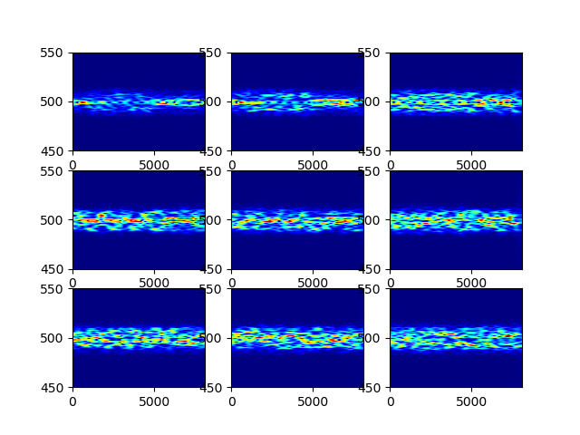

6G: Connecting Everything by 1000 Times Price Reduction
S. Zhang, C. Xiang, S. Xu. IEEE Open Journal of Vehicular Technology, 2020.
Personal Homepage
Wireless systems, mobile computing, indoor localization, WiFi CSI, and reproducible sensing experiments. My Google Scholar profile mainly reflects work from my PhD period.
I am 向晨路, also listed as Chenlu Xiang. During my PhD period at Shanghai University, my research sat at the intersection of wireless systems and mobile computing: robust indoor localization, WiFi-based sensing, CSI data processing, transfer learning for fingerprints, and cooperative localization.

S. Zhang, C. Xiang, S. Xu. IEEE Open Journal of Vehicular Technology, 2020.
C. Xiang, S. Zhang, S. Xu, X. Chen, S. Cao, G. C. Alexandropoulos, V. K. N. Lau. IEEE Access, 2019.
C. Xiang, S. Zhang, S. Xu, G. C. Alexandropoulos. IEEE ICC, 2021.
C. Xiang, S. Zhang, S. Xu, G. Mao. IEEE Sensors Journal, 2022.
These publications are mainly from my PhD research period. Full list on Google Scholar.
Alongside papers, I keep research code and experiment notes in public repositories. The common thread is practical wireless sensing: collecting CSI, parsing low-level measurements, reproducing classic systems, and testing localization algorithms.
A curated collection for WiFi CSI research, collecting papers, resources, and practical references for wireless sensing work.
Python implementations and experiments around Widar2 and Widar3, including CSI parsing, scaling, data conversion, and signal processing workflows.
Linux 802.11n CSI Tool utilities for bidirectional CSI acquisition in monitor mode, designed for two-machine CSI collection experiments.
Localization experiments and scripts involving TDOA, Chan-Taylor methods, node selection, and simulation scenarios.
I am gradually turning project notes into short posts. Topics I want to keep close at hand: CSI data formats, Linux 802.11n CSI Tool workflows, Widar reproduction details, transfer learning for fingerprints, and practical localization experiments.
Find my research profile on Google Scholar, professional profile on LinkedIn: 晨路-向-829977127, and public code on GitHub.